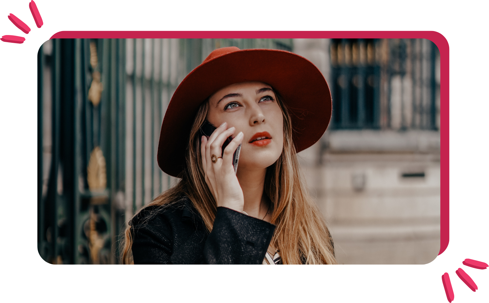

Cette décision a changé ma vie
(et mon business)

Je suis sûre que toi aussi tu as déjà connu ça…
👉 Ce moment où tu décides de prendre les décisions qui
s’imposent après avoir passé du temps auprès de
personnes qui t’inspirent...
En 2020, j'avais besoin de challenge et de bienveillance.
J'ai passé l'année en alternance auprès de 2 indépendants.
La vie de rêve ✨ : ils faisaient ce qui leur plaisait, ils avaient des projets passionnants, du temps pour leurs hobbies, leur famille, ils partaient en voyage. Ils travaillaient avec plaisir.
Je me suis dis que j'étais faite pour vivre la même vie qu'eux 🌈
En juin 2021, j'ai ouvert ma société. J’alternais entre l’école, l’alternance et ces petits contrats que l’on me confiait via le bouche-à-oreille.
Façonnée par l’école à devenir salariée, j’ai passé 2 entretiens…
❌ Et ça a clairement été LE déclic: hors de question de travailler pour quelqu’un d’autre !
✅ J’allais devenir indépendante à 100% !
J’ai commencé plus motivée que jamais !
Mais j'étais submergée par des questionnements 🙀
À l’époque, j’avais entendu parler de certains sites de référencement pour freelances (Malt, 5euros, Fiver…) C’était un peu la foire au n’importe quoi ! Et ça ne m'a absolument rien rapporté sauf une perte de temps 😤
J’avais beau essayer de mettre en pratique tout ce que j’avais appris à l’école, ça ne fonctionnait pas. Je n’avais aucune maîtrise sur ce business que j’essayais de monter 😰
💬 Je me suis alors rappelée de la phrase de mon père : "Tu dois te former tout au long de ta vie".
C’était une évidence ! Je devais me faire accompagner par un professionnel.
Je suis donc partie à la recherche de mon sauveur !
J’ai passé des heures à chercher “THE” personne… Et j'ai trouvé Yacine en octobre 2021. 🌈
J'ai ainsi pu suivre son challenge business et trouver ma place dans l'entrepreneuriat.
C’était l’éclate ! Et j’avais clairement envie d’aller plus loin et de m’offrir enfin la chance que je méritais !
J'ai suivi son accompagnement.
2 mois plus tard, je vivais déjà de mon activité. 🚀
Aujourd'hui, je m'épanouis en accompagnant les entrepreneurs à systématiser l'acquisition et la conversion dans leur business 😍
À l’époque, j’avais entendu parler de certains sites de référencement pour freelances (Malt, 5euros, Fiver…) C’était un peu la foire au n’importe quoi ! Et ça ne m'a absolument rien rapporté sauf une perte de temps 😤
J’avais beau essayer de mettre en pratique tout ce que j’avais appris à l’école, ça ne fonctionnait pas. Je n’avais aucune maîtrise sur ce business que j’essayais de monter 😰
💬 Je me suis alors rappelée de la phrase de mon père : "Tu dois te former tout au long de ta vie".
C’était une évidence ! Je devais me faire accompagner par un professionnel.
Je suis donc partie à la recherche de mon sauveur !
J’ai passé des heures à chercher “THE” personne… Et j'ai trouvé Yacine en octobre 2021. 🌈
J'ai ainsi pu suivre son challenge business et trouver ma place dans l'entrepreneuriat.
C’était l’éclate ! Et j’avais clairement envie d’aller plus loin et de m’offrir enfin la chance que je méritais !
J'ai suivi son accompagnement.
2 mois plus tard, je vivais déjà de mon activité. 🚀
Aujourd'hui, je m'épanouis en accompagnant les entrepreneurs à systématiser l'acquisition et la conversion dans leur business 😍